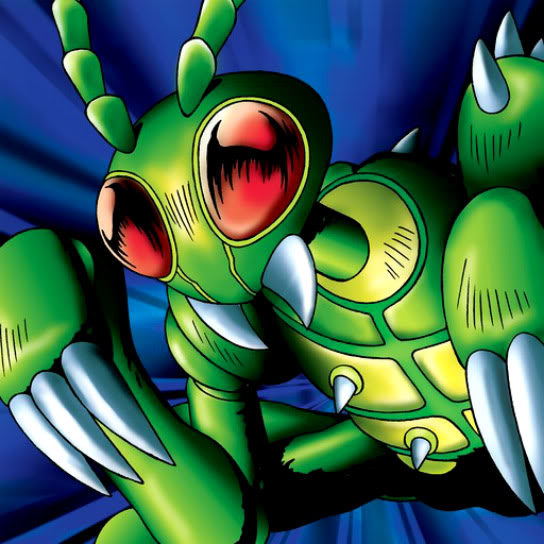

Basic Insect

STATS
ATK: 500
DEF: 700
DECK COST
Deck Cost per Card: 12
Fusion List (2 Possible Fusions)
Basic Insect + Masked Clown = Cockroach Knight
Basic Insect + Swordsman from a Foreign Land = Cockroach Knight